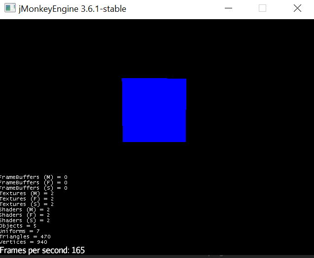
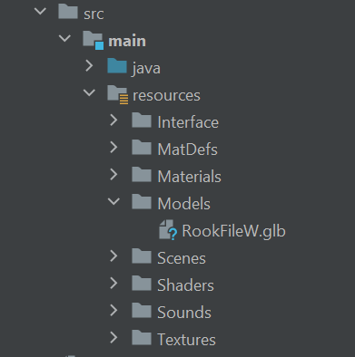
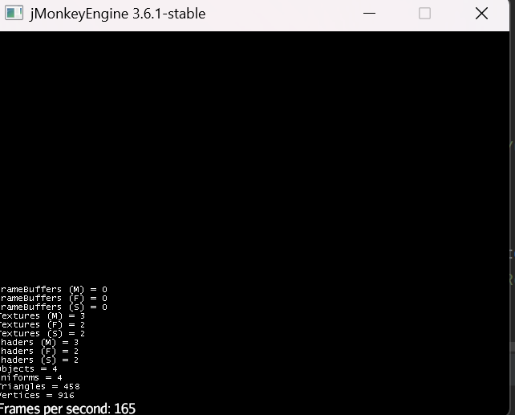
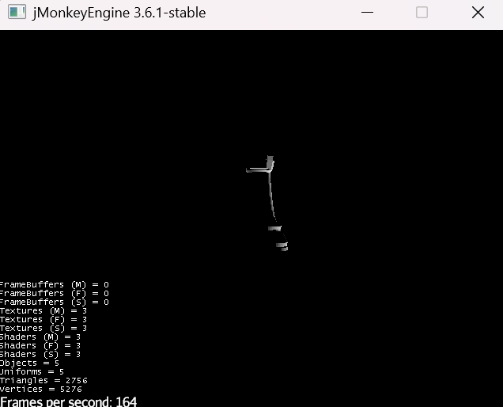
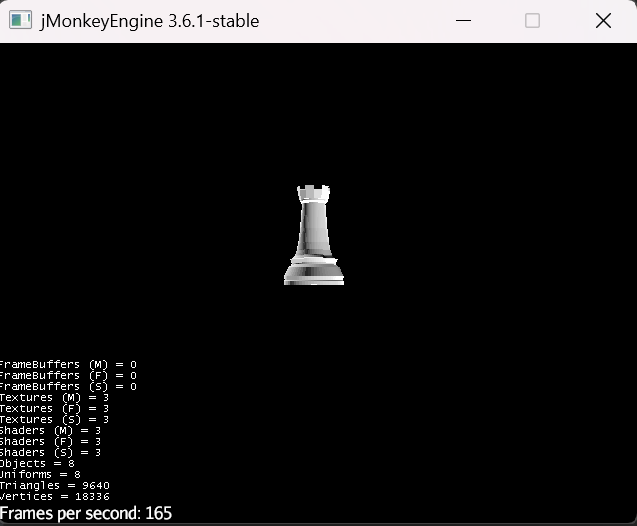

JMonkeyEngine is a modern game engine written primarily written in Java. This is a very useful library with a "code first" approach.
However, the online documentation is rather sloppy for nieche problems or describing the functionality of a certain class.
In this tutorial, I will be working within Intellij to showcase how this engine isn't tied to any IDE.
They have a rather mediocre sdk they have programmed with this game engine in mind with further documentation found within the inside code.
That can be found here.
Otherwise, you can find more information about JMonkeyEngine and start a project here.
Press this button on the website to start a project.
Input the information for the project and press download a starter project. It is going to download a .zip file with a Java Project inside.
This tutorial will not be a tutorial about anything specific, rather I will demonstrate how to use the most critical parts of the engine.
I will inevitably use assets from my 3d chess project, which were made in a 3d modeler such as Blender, but this will not be a tutorial for 3d modeling.
Now that you have a starter project, you can open and run the project. The directory is
-PROJECT_NAME-/src/main/java/-PACKAGE_NAME-/-PROJECT_NAME-
If you run the program just as it is, you should get a window that looks like this:

That blue box is the one created by the initial simpleInitApp()
The controls to use the camera are:
Going back to the code, there are a few things of note.
The Main method contains 3 lines of important code.
Test app = new Test(); creates an instance of this class since Main() is static.
app.showSettings(false); set this to true and see the settings.
app.start(); starts the application.
If you'll notice, there is also one other method with a body. The simpleInitApp() method is an overrided method from the parent class, SimpleApplication.
It runs as soon as the app is ran inside the Main Method.
Box b = new Box(1,1,1); is creating a Box Shape, passing the dimensions through the constructor.
Geometry geom = new Geometry("Box", b); is creating a Geometry for the RootNode, passing through a String name of the shape and the variable we created previous, b.
Material mat = new Material(assetManager, "Common/MatDefs/Misc/Unshaded.j3md"); is defining the material, which is what the user actually sees, is defined using the assetManager, which is a variable inside our SimpleApplication and with the path of a unshaded texture.
mat.setColor("Color", ColorRGBA.Blue); is just setting the color of the material.
geom.setMaterial(mat); is setting the material of the geometry to the material we defined up above, mat.
rootNode.attachChild(geom); is attaching the geometry to the rootNode, a variable inside SimpleApplication
The other two methods are part of the abstract methods, but will not be touched on right now.
To truly learn how to operate the concrete class, it is important to delve into the abstract class to learn how what you can use from the parent.
If you press Shift and click on SimpleApplication, it will bring you into the class.
The first thing I would like to point out is at the bottom is the methods you inherit in your Main class.
Another thing that would help in learning this library is to become familiar with what getters and setters are available to you.
The next thing that I would like to point out is the constructor of the class. By default, it makes new instances of:
StatsAppStateFlyCamAppStateAudioListenerStateDebugKeysAppStateConstantVerifierState
This tutorial will be utilizing various variables from these, but it isn't fully necessary to delve into the classes individually.
Just know they exist and when they get referenced in here, I will explain how it works.
I am seperating this into it's own section purely because it is a big method and most of it is pretty important to understand as well.
For the most part, this method is to create different variable and assign them.
flyCam, then assigns the state in the stateManager.simpleInitApp().
Meaning that as soon as the Main method is called, you need to have the first line make a new instance of the concrete class.
As soon as the Main class runs, your SimpleInitApp() code will run before anything else in the Main method.
This can be used to do things prior to when the user can see the pop-up window, but it also needs to be used precisely to avoid bugs.
The flyCam variable is a public variable given to us through the parent class. This is the camera that the player can control.
To disable the camera, and disable the player being able to move it, you can use flyCam.setEnabled(false);
While it may look the same, the user cannot interact with the camera.
Because of how they have the encapsulation, we must interact with the position of the camera using flyCam.onAnalog();
This method takes in 3 parameters:
onAnalog() method, you can find the String Variables.
Meaning that if I were to write the line flyCam.onAnalog("FLYCAM_StrafeRight", 2, 200); I would get something that looks like this:
One of the defaulted methods within the Main class is the simpleUpdate(float tpf) method.
The one parameter stands for Time Per Frame, which is the Δ (Delta) of time between each Frame.
We can utilize this part of the code to make it so that we move the camera every frame, effectively making an "Animation".
I would personally seperate the function call into a method, so that we can single out all camera movement into one method.
Also, I would recommend that you make the length of the camera movement WAY shorter so you can actually witness the animation.
When I used this engine, It was to create a 3d chess game. So we needed to actually insert the assets into the engine.
To do this, we are going to need a .glb file type. In blender, you can export it to such a file.
WARNING: This is not a tutorial on how to make a custom asset!
Drag and drop the file into the file for assets. The directory for the file should be './resources/Models', just to keep conventions.
By default, JMonkeyEngine has an Empty file in every directory it creates in the resources folder. You can delete it to clean up the directory.
It should look something like this.

Now that we have the Model in the file directory, we can access the model and use it.
To access the file, we are going to use the assetManager & FileLocator import class from JMonkeyEngine.
This will help us to be able to access the files.
We need to call the assetManager class built into the SimpleApplication class and use the .registerLocator("/Assets", FileLocator.Class) method.
It has two parameters, the first string is to tell the SimpleApplication from which to locate assets for the given AssetLocator.
The second parameter is the class type of AssetLocator to use. Primarily you will just use the Parent FileLocator class, but there are use cases where subclasses can be useful!
Now we are going to use the .loadModel(-File Directory-) method and store it as a Spatial variable.
Finally we can load the model using rootNode.attachChild(object);
Now if you were to run the method, you would see something like this:

As you can see, even though the asset is being created in the world, we cannot see it.
This is because loading assets use a lighting system to represent lighting
For this, we are going to use the DirectionalLight class. Just know that you can also use any subclass of the abstract Light class.
This class is rather simple to implement. First create an instance of the DirectionalLight
Then we need to assign the direction of the light with .setDirection(Vector3f) method.
If you don't understand Vectors, just think of them as arrows pointing from a point outwards.
Since we are working in 3d, we need to give it an x, y, & z position
Normally we just declare a new instance of the Vector3f class anytime we need to use one.
So inside of the setDirection() method, we need to put new Vector3f(-3, 5, 3).normalizelocal()
Now I am not going to get into normalizing a vector, but it is just some math to make sure our vectors are correctly project our light.
Now all we need to do is add the light to the rootNode with rootNode.addLight(dl)
If we were to run this, it will look like this:

Obviously this is not the intended outcome, but here comes the trouble of using DirectionalLight.
Since this is just shining light from a given point, it doesn't shine on all sides of the piece.
To fix this, we are going to use multiple DirectionalLight to project from all angles.
I have tried multiple variations of DirectionalLight placements, but for my project I found it best to have 3 DirectionalLights above the scene and 1 DirectionalLight below the scene.
This gets into the setup of your project, and how you want the shadows to appear. I encourage finding different positions to find the best lighting for your project.
My snippit of code like this:
If you were to run it, it should look something like this:

One reason I like DirectionalLight is that since you have 4 different light sources, you can use one of them to change the light properties.
I added this snippit of code to the simpleUpdate method so we can see a simple animation of the light source.
we can also change the color of the first DirectionalLight to red using the .setColor(ColorRGBA.Red); method so that we can actually see the animation.
The animation should look something like this:
Take a moment after the animation to look at how the colored light changes the asset. Now you can see the creativity of having DirectionalLight!
It may not be the right choice for your project, so I would encourage you also look into which subclass of Light to see which one suits your needs.
To implement user input in the form of keyboard input, we need to implement the ActionListener interface.
If we look inside this interface, we see that we only need to override the onAction() method, that has 3 parameters.
The way we implement this is two fold:
inputManager what mappings to listen for and which listener is handling the events
First let's tackle the methods for the inputs we want.
I am going to make a small method for demonstrational purposes, but for each project will come different inputs needed.
One Example is if you need to lock the camera into a certain position in the world
We can use the parameters to our advantage as we can make sure that the button is pressed and that it is the certain input.
Since the inputs are a string field that you input, they could be named anything but it is common to use something that is relevant to the input.
For this I am just using "P" since I am creating an event that uses the P key.
If these conditions are true, we are going to enable the camera just in case it got disabled and move it 5 units to the left.
Obviously this is simplistic, but we can implement more complex methods later.
We now need to tell the inputManager about our inputs.
We can do this by using the .addMapping() & .addListener methods.
We have a couple parameters with the .addMapping() method.
We need the String mapping name, which for this is "P",
We also need a KeyTrigger object, which takes a enum value, or technically an int value.
We can use the KeyInput enum to acomplish this.
After we map the input to the inputManager, then we need to add reference to the ActionListener that is going to listen and respond for the action.
This also takes two parameters
The first one is the ActionListener object, and the other one is the name of our mapping.
I seperated this into a method since we are going to expand on different types of user input
This section is going to be a precursor to the next section, so you need to read this before the next section.
This concept in itself is pretty simple since JMonkeyEngine handles a lot of the math, but understanding the math at a fundamental level is needed to understand the code.
So, to get mouse input is another input managed by the ActionListener, so we can quickly implement that for the left click.
When we add the mapping, we need to use a MouseButtonTrigger object and use the MouseInput.BUTTON_LEFT enum value for the constructor.
Other than that, it is the same process as before. In the if statement inside the actionListener, I am calling a method I will be doing the logic in.
So we are going to do a simple method that detects if you are clicking an object in the world.
To do this, we need to create a CollisionResults variable, which is going to hold the result of our collision.
We also need to get the cursor position on the screen, which is stored as a Vector2f.
We can get this through the inputManager.getCursorPosition() method.
Although the screen is 2d, we need to interact with the world, we need three dimensions.
We can get this through the cam.getWorldCoordinates() method.
The two parameters are our Vector2f, and the Z position you want to project at. For this I am going to leave it at 0.
We also need to get the direction that the cursor is pointing in reference to the 3d world.
To do this, we are going to use the cam.getWorldCoordinates()
We are still going to use our cursor position, but for the Z position, we are going to put 1.
After we get the coordinate, we need to subtract it from our position in 3d to get a vector that represents the direction of our point in reference to our world.
We still need to normalize the vector.
Now that we have the point in space that we are clicking at and a direction that we are clicking towards, we can now create a Ray.
This ray is a mathematical ray, that starts at a point and is a one-directional line going into a direction.
Using this, we can check for collisions with the rootNode.collideWith() method.
The two parameters it wants is our ray that we just created, and the CollisionResults variable we made at the beginning.
This method finds the collision of all objects that collides with the ray and compiles it into our CollisionResults for us to use.
If you look inside the CollisionResults class, you can see that it has an arraylist of CollisionResult,
That class has the Geometry that we collided with, the contact point, and distance, along with a few others but we aren't interested in them.
With this, we can index into the Geometry that we have clicked.
Using results.getCollision(0).getGeometry(), we have access to the geometry and can manipulate it.
WARNING: This section builds on the last section, so read that section before moving on
To properly understand how to manipulate game objects, first you need to know the difference between Local transformations & World transformations.
The difference will become apparent once you use them. They both have their reasons to be used.
From the last section, we now have access to the geometry in our world, so we can use that to see the difference
If you type geometry., you can see all of the methods available to you.
Notice that you can set local translation, but you cannot set world translation
This is because the world translation is the position relative to the world, so it doesn't make sense for the geometry to set the world's translation
Although you cannot set the world translation, you can get the world translation, and this is so that you can know where the geometry is in relation to the world
If we were to set local translation, we are setting how many units away from the spawn location of the geometry.
This is a important part to understand as where the geometry spawn is regarded as (0,0,0) with local translation
There is another method that works similarly, and that is the .move() method.
The .move() method moves the geometry from it's given position.
This is the equivalent to a += operator, as it takes the current position and moves it in the given Vector3f
For the most part, it is more intuitive to use .move() over .setLocalTranslation(), with the exception of moving the geometry for the first time since the geometry is at (0,0,0)
I want to finish the off with a few thoughts and ideas to further progress your project.
First thing is to remember that this is a game engine, and uses a lot of common concpets within game engines.
JMonkeyEngine is basic in the sense that it is code-based, and doesn't have an interface like commercial game engines.
That being said, everything that you learn within JMonkeyEngine can be transfered to other game engines, and vice versa.
Another thing I want to point out is that there is great power in determination.
If you have read through this tutorial, that probably means that you are planning a project and have an idea in mind.
I have given a lot of fundamentals, but there is a lot of functionality in this SDK that I haven't explained.
Making an entire game without an interface can be challenging at times, so debugging will become your best friend.
Don't let the idea of debugging discourage you; instead use it to understand what your code is doing.
Creating a game to perfection takes a lot of work, but as long as you keep moving forward and continue learning, anything is possible!